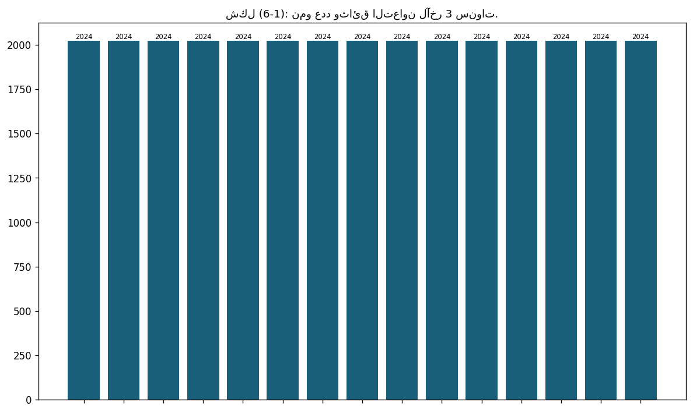
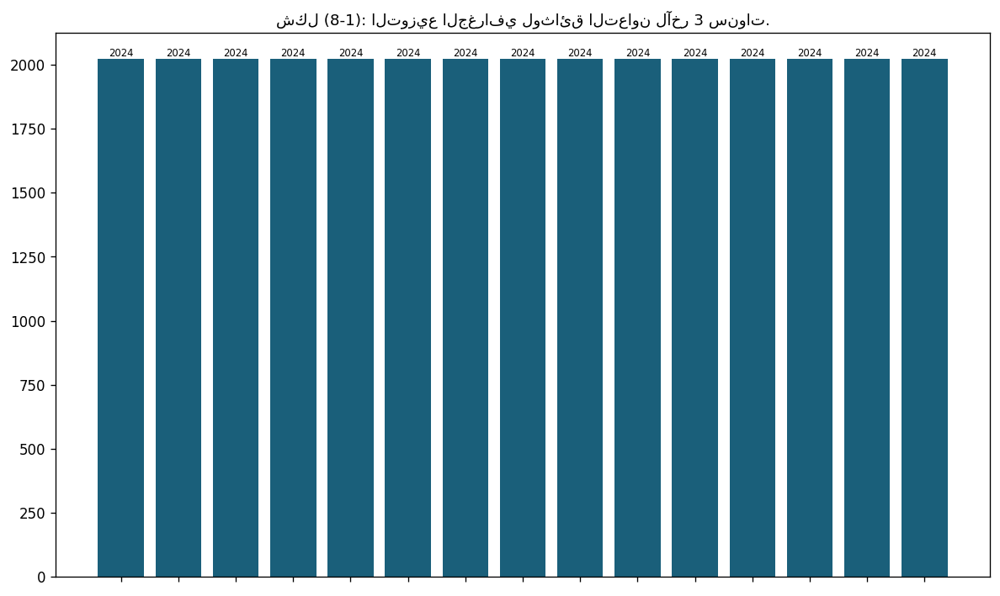

1.10: عدد البرامج المشتركة مع جامعات عالمية مرموقة ضمن 500 جامعة
📝 27 فقرة
📋 3 جدول
📊 3/4 شكل
أيقنت الجامعة أن الانفتاح على الجامعات في العالم، يُعد من أهم المعايير التي يُقاس بها تطور الجامعات وتقدُّمها، كما أنَّ التعاون الدولي في جامعة البترا، كان ولا زال همزة الوصل بين الجامعة والمؤسسات التعليمية العالمية، والإقليمية، والمحلية؛ وذلك بإنشاء البرامج المشتركة، وعقد الاتفاقيات، وتبادل الخبرات مع هذه المؤسسات. ويعمل المعنيون في الكليات والأقسام الأكاديمية، على مدِّ جسور التعاون الأكاديمي مع جامعات مرموقة؛ للبدء بإنشاء برامج مشتركة، إلا أنه لا توجد برامج مشتركة مع جامعات عالمية. وتماشيًا مع
حرصت الجامعة خلال العام الجامعي 2023/2024 على بناء وتفعيل اتفاقيات نوعية تعكس توجهات الجامعة البحثية والتعليمية، وتخدم أهداف التنمية المستدامة، وتدعم فرص التدريب والتوظيف، وتدعم التصنيفات وذلك بالتنسيق مع الكليات والوحدات ذات العلاقة، حيث:
تم تجديد عدد من المذكرات المنتهية لضمان استمرارية وديمومة التعاون.
تم توسيع شبكة الشراكات الاستراتيجية في مجالات البحث العلمي، حيث تم تصميم واعتماد مذكرة تفاهم مخصصة لهذه الغاية بالتعاون مع عمادة البحث العلمي ومساعد الرئيس للشؤون القانونية، وتوقيع مذكرتين في هذا المجال :
مذكرة تفاهم بين جامعة فريدريش شيلر جينا في ألمانيا (البروفيسور فولفغانغ فايغاند) مع جامعة البترا-كلية الآداب والعلوم-قسم الكيمياء.
مذكرة تفاهم بين جامعة هدرسفيلد في إنجلترا (الأستاذ الدكتور روجر فيليبس) مع جامعة البترا-كلية الصيدلة والعلوم الطبية.
ويلخص الجدول الآتي مذكرات التفاهم للعامين 2023-2024:
تم توقيع مذكرات تفاهم تفيد التبادل الطلابي بشكل خاص بين جامعة البترا والجهات الآتية:
كلية لندن الجامعية (UCL)-إنجلترا.
كلية دبلن الجامعية (UCD)-إيرلندا.
المشاركة في المؤتمرات والفعاليات المحلية والعالمية:
تُعد المشاركة في المؤتمرات والفعاليات الأكاديمية المحلية والعالمية من الركائز الأساسية لتوسيع شبكة العلاقات المؤسسية، وبناء صورة إيجابية للجامعة، وتعزيز حضورها ضمن المنصات الدولية المؤثرة. وفي هذا الإطار، شارك مساعد الرئيس للاتفاقيات والتعاون الدولي في مجموعة واسعة من الفعاليات خلال العام 2023-2024، سواء عبر الحضور المباشر أو المنصات الرقمية، مما أسهم في دعم الأهداف الاستراتيجية للجامعة، ومنها:
تمثيل الجامعة في عدد من المؤتمرات والندوات وورش العمل والاجتماعات محليا وعالميا، وجاهيا وعن بعد، وتشمل:
ندوات البنك الدولي IFC وعددها ست ندوات (تم تعميم جزء منها على المهتمين في الجامعة).
ورش عمل الهيئة الألمانية للتبادل الأكاديمي DAAD وعددها أربع ورش عمل.
اجتماعات السفارة الأمريكية لمسؤولي التعاون الدولي وعددها ثلاثة اجتماعات.
المشاركة في اجتماعات تحديث المنظومة الأكاديمية-مجلس الأعيان- لجنة تحديث وتطوير الخطط الدراسية الأكاديمية وعددها خمس اجتماعات، والمشاركة في إعداد مسودة خارطة الطريق نحو التطبيق.
المشاركة في ندوات اتحاد الجامعات العالمية IAU المتعلقة بعالمية الجامعات وعددها خمس ندوات.
المشاركة في برنامج البنك الدولي للتعليم الدامج والتوظيف، حيث تم توقيع مذكرة الالتزام، وتقديم خارطة الطريق والتقارير المطلوبة، وتمثيل الجامعة في ستة اجتماعات.
تم عقد العديد من الاجتماعات عن بُعد لمتابعة تفعيل مذكرات التفاهم مع الجامعات الماليزية، والبريطانية، والتركية، والأمريكية، والعراقية، والفلسطينية، وغيرها.
تم استضافة العديد من الوفود الأجنبية والإقليمية والمحلية الزائرة للجامعة بما يسهم في تحسين الصورة المجتمعية للجامعة محليًا وعالميًا.
برامج التبادل الأكاديمي والبحثي:
يُعد التبادل الأكاديمي والبحثي من المحركات الجوهرية لتطوير البيئة الجامعية وتعزيز التفاعل المعرفي والثقافي بين جامعة البترا ومؤسسات التعليم العالي حول العالم. وقد عمل مساعد الرئيس خلال العام الأكاديمي على تفعيل برامج التبادل بما يحقق فائدة مباشرة لأعضاء الهيئة التدريسية والطلبة، ويدعم التوجهات البحثية المشتركة مع جامعات مرموقة، من هنا فقد تم:
استقبال اثنين من الأساتذة والباحثين من مؤسسات شريكة لفترات قصيرة (كلية الآداب والعلوم-قسم الكيمياء، وكلية الصيدلة والعلوم الطبية-قسم الصيدلة).
تنسيق خروج اثنين من أعضاء الهيئة التدريسية في كلية الصيدلة والعلوم الطبية للمشاركة في برامج التبادل الأكاديمي ضمن مذكرات التفاهم الموقعة (د. أحمد العثامنة وص. رهام المغير).
تنفيذ ومتابعة مشاريع بحثية مشتركة مع جامعات عالمية بالتعاون مع عمادة البحث العلمي والدراسات العليا.
المعيار الثاني : التدريس:


جدول (1-6): وثائق التعاون للفترة 2023-2024.
📊 80 صف من البيانات
| Institution | Country | Type of Cooperation | Date | Duration | |
|---|---|---|---|---|---|
| Correlation One | USA | Capacity building and employability | 2024 | 1 year | |
| Utah State University | USA | Scientific Research & Academic Cooperation | 2024 | 5 years | |
| The Jordanian American Commission for Educational Exchange | USA | Capacity building & Academic Cooperation | 2024 | 3 years | |
| University College of London | United Kingdom | Student Exchange | 2024 | 5 years | |
| International Association of Universities | France | Membership | 2024 | 1 year | |
| Friedrich-Schiller-Universität Jena | Germany | Scientific Research | 2024 | 1 year | |
| University College of Dublin | Ireland | Academic Cooperation & Student Exchange | 2024 | 3 years | |
| Istanbul Medipol University | Turkey | Academic Cooperation and Capacity building | 2024 | 5 years | |
| Communication University of China | China | Scientific Research & Academic Cooperation | 2024 | 5 years | |
| Huawei Technologies | China | Academic Cooperation and Capacity building | 2024 | 1 year | |
| Skyline University College | Emirates | Scientific Research & Academic Cooperation | 2024 | 5 years | |
| Palestine Polytechnic University | Palestine | Scientific Research & Academic Cooperation | 2024 | 3 years | |
| Al-Quds Open University | Palestine | Scientific Research & Academic Cooperation | 2024 | 3 years | |
| Al-Rawdah University College | Palestine | Scientific Research & Academic Cooperation | 2024 | 5 years | |
| Universiti Sains Islam Malaysia (USIM) | Malaysia | Scientific Research (LOI) | 2024 | - | |
| Asia Pacific University (APU) | Malaysia | Scientific Research & Academic Cooperation | 2024 | 5 years | |
| Management and Science University (msu) | Malaysia | Scientific Research & Academic Cooperation | 2024 | 5 years | |
| Australian University | Kuwait | Scientific Research & Academic Cooperation | 2024 | 5 years | |
| Ministry of Digital Economy and Entrepreneurship | Jordan | Capacity building | 2024 | 3 years | |
| Academia Industry Platform (JAIP) | Jordan | Scientific Research | 2024 | 2 years | |
| Electronic Health Solutions | Jordan | Capacity building and resources | 2024 | 1 year | |
| Arab Group for the Protection of Nature | Jordan | Sustainability | 2024 | 1 year | |
| Al-Moasron Group | Jordan | Capacity building and Scientific Research | 2024 | 3 years | |
| Dar Al Dawa | Jordan | Capacity building and employability | 2024 | 1 year | |
| Al-Rai Center for Studies and Media Training | Jordan | Capacity building and employability | 2024 | 1 year | |
| Ayla Media | Jordan | Capacity building and employability | 2024 | 1 year | |
| Jordan Volleyball Federation | Jordan | Capacity building and employability | 2024 | 1 year | |
| Jordanian Weight Lifting Federation | Jordan | Capacity building and employability | 2024 | 1 year | |
| Arab Group for the Protection of Nature | Jordan | Sustainability | 2024 | 1 year | |
| Jordan Radio and Television Corporation | Jordan | Practical training for students of the Faculty of Mass Communication | 2024 | 1 year | |
| Naif Al Haj Foundation | Jordan | Basketball Training | 2024 | 1 year | |
| Sports Culture Association | Jordan | Research, Training, Development | 2024 | 1 year | |
| Tomouh Foundation for Capacity Development | Jordan | Cooperation and exchange in academic fields | 2024 | 5 year | |
| Jordan Library and Information Association | Jordan | Cooperation and exchange in academic fields | 2024 | 3 year | |
| Sovana Foundation for Consulting and Economic Projects Development | Jordan | Free hands-on field training | 2024 | 1 year | |
| Society of Retired Military Engineers | Jordan | Rehabilitation and training of students | 2024 | 5 year | |
| Department of Statistics | Jordan | Scientific Research and Employability | 2024 | 1 year | |
| Al-Taif Co. (Nomoo Hub) | Jordan | Employability | 2024 | 2 years | |
| Balkan Industrial Co. | Jordan | Capacity building and employability | 2024 | 1 year | |
| INGOT Brokers | Jordan | Capacity building | 2024 | 1 year | |
| Jordan Ahli Bank | Jordan | Capacity building and employability | 2024 | 1 year | |
| Mada | Jordan | Capacity building and employability | 2024 | 1 year | |
| Jordanian Pharmaceutical Manufacturing Co. (JPM) | Jordan | Capacity building, employability and Scientific Research | 2024 | 5 years | |
| Arab Thought Forum | Jordan | Capacity building, Scientific Research | 2024 | 5 years | |
| Iraqi Universities | Iraqi Universities | Iraqi Universities | Iraqi Universities | Iraqi Universities | Iraqi Universities |
| University of Samarra | Iraq | Scientific Research & Academic Cooperation | 2024 | 5 years | |
| Nahrain University | Iraq | Scientific Research & Academic Cooperation | 2024 | 5 years | |
| Al-Iraqia University | Iraq | Scientific Research & Academic Cooperation | 2024 | 5 years | |
| University of Anbar | Iraq | Scientific Research & Academic Cooperation | 2024 | 5 years | |
| Al-Muthanna University | Iraq | Scientific Research & Academic Cooperation | 2024 | 5 years | |
| Wasit University | Iraq | Scientific Research & Academic Cooperation | 2024 | 5 years | |
| National University of Science and Technology | Iraq | Scientific Research & Academic Cooperation | 2024 | 5 years | |
| Al-Shaab University | Iraq | Scientific Research & Academic Cooperation | 2024 | 5 years | |
| University of Kufa | Iraq | Scientific Research & Academic Cooperation | 2024 | 5 years | |
| University of Information Technology and Communications | Iraq | Scientific Research & Academic Cooperation | 2024 | 5 years | |
| Al-Qalam University College | Iraq | Scientific Research & Academic Cooperation | 2024 | 5 years | |
| University of Sulaimani | Iraq-Kurdistan | Scientific Research & Academic Cooperation | 2024 | 5 years | |
| Komar University of Science and Technology | Iraq-Kurdistan | Scientific Research & Academic Cooperation | 2024 | 5 years | |
| Sulaimani Polytechnic University | Iraq-Kurdistan | Scientific Research & Academic Cooperation | 2024 | 5 years | |
| Qaiwan International University | Iraq-Kurdistan | Scientific Research & Academic Cooperation | 2024 | 5 years | |
| University of Garmian | Iraq-Kurdistan | Scientific Research & Academic Cooperation | 2024 | 5 years | |
| University of Human Development | Iraq-Kurdistan | Scientific Research & Academic Cooperation | 2024 | 5 years | |
| University of Raparin | Iraq-Kurdistan | Scientific Research & Academic Cooperation | 2024 | 5 years | |
| Cihan University of Sulaymaniyah | Iraq-Kurdistan | Scientific Research & Academic Cooperation | 2024 | 5 years | |
| University of Halabja | Iraq-Kurdistan | Scientific Research & Academic Cooperation | 2024 | 5 years | |
| Tishk International University Sulaimani | Iraq-Kurdistan | Scientific Research & Academic Cooperation | 2024 | 5 years | |
| Charmo University | Iraq-Kurdistan | Scientific Research & Academic Cooperation | 2024 | 5 years | |
| American University of Iraq-Sulaimani | Iraq-Kurdistan | Scientific Research & Academic Cooperation | 2024 | 5 years | |
| University of Garmian | Iraq-Kurdistan | Scientific Research & Academic Cooperation | 2024 | 5 years | |
| University of Duhok | Iraq-Kurdistan | Scientific Research & Academic Cooperation | 2024 | 5 years | |
| Nawroz University | Iraq-Kurdistan | Scientific Research & Academic Cooperation | 2024 | 5 years | |
| Duhok Polytechnic University | Iraq-Kurdistan | Scientific Research & Academic Cooperation | 2024 | 5 years | |
| Cihan University - Duhok | Iraq-Kurdistan | Scientific Research & Academic Cooperation | 2024 | 5 years | |
| University of Zakho | Iraq-Kurdistan | Scientific Research & Academic Cooperation | 2024 | 5 years | |
| Akre University | Iraq-Kurdistan | Scientific Research & Academic Cooperation | 2024 | 5 years | |
| The American University of Kurdistan | Iraq-Kurdistan | Scientific Research & Academic Cooperation | 2024 | 5 years | |
| Al-Kitab University | Iraq-Kurdistan | Scientific Research & Academic Cooperation | 2024 | 5 years | |
| Knowledge University | Iraq-Kurdistan | Scientific Research & Academic Cooperation | 2024 | 5 years | |
| Al-Forqan University | Iraq-Kurdistan | Scientific Research & Academic Cooperation | 2024 | 5 years | |
| Al-Nukhba University College | Iraq-Kurdistan | Scientific Research & Academic Cooperation | 2024 | 5 years |
جدول
📊 22 صف من البيانات
| Institution | Country | Type of Cooperation | Date | Duration | |
|---|---|---|---|---|---|
| Odoo Middle East Limited | Dubai | Academic Cooperation | 2023 | 2 years | |
| Istanbul University | Turkey | Academic Cooperation | 2023 | 1 year | |
| University Sains Malaysia | Malaysia | Scientific Research & Academic Cooperation | 2023 | 18 months | |
| Suzhou University for Science and Technology | China | Scientific Research & Academic Cooperation | 2023 | 2 years | |
| The Royal Academy of Engineering (Jordan) & University of Bradford | UK | Scientific Research Cooperation | 2023 | 1 year | |
| New World for Water Technology (Jordan) & University of Bradford | UK | Scientific Research Cooperation | 2023 | 1 year | |
| International Association of Universities | France | Membership | 2023 | 1 | |
| IPCA Polytechnic Institute of Cávado and Ave | Portugal | Mobility of staff and students | 2023 | 4 years | |
| University of Minho | Portugal | Scientific Research & Academic Cooperation | 2023 | 3 years | |
| Abonnez-vous à l’infolettre de l’AUF International | Canada | Scientific Research & Academic Cooperation | 2023 | By the end of activities | |
| Amideast\Jordan | USA | Academic Cooperation | 2023 | 2 years | |
| The Hope | Jordan | Academic Cooperation | 2023 | 1 year | |
| Jordanian Royal Medical Services | Jordan | Academic Cooperation | 2023 | 2 years | |
| National Cyber Security Center | Jordan | Scientific Research & Academic Cooperation | 2023 | 1 year | |
| National Center for Research & Development | Jordan | Scientific Research Cooperation | 2023 | 1 year | |
| Specialty Hospital | Jordan | Academic Cooperation | 2023 | 4 years | |
| Social Security Corporation | Jordan | Academic Cooperation | 2023 | 2 years | |
| Synchrotron-Light for Experimental Science and Applications in the Middle East | Jordan | Scientific Research & Academic Cooperation | 2023 | 5 years | |
| Jordanian Lawyers Association | Jordan | Academic Cooperation | 2023 | 1 year | |
| Central Bank of Jordan | Jordan | Academic Cooperation | 2023 | 1 year | |
| National Agricultural Research Center | Jordan | Scientific Research & Academic Cooperation | 2023 | 10 years | |
| 21 | Swiss Health Care LLC | Jordan | Scientific Research Cooperation | 2023 | 5 years |
جدول (1-7): نتائج إدارة مذكرات التفاهم التي تفيد التدريب لغايات التوظيف.
📊 8 صف من البيانات
| مدى فاعلية وثيقة التعاون الخاصة بالتوظيف ومخرجاتها للعام 2023-2024 | جهة التعاون |
|---|---|
| تم تدريب 100 طالبٍ وطالبة ضمن برنامج Tech. for Jobs الممول بالكامل من ضمنهم 55 خ | Correlation One |
| تم عقد ورشة عمل للطلبة وأعضاء الهيئة التدريسية. يتم بشكل فصلي تدريب الطلبة في كل | Odoo Middle East Limited |
| تم تقديم ثلاث طالبات للمنح المقدمة (واحدة من كلية الإعلام وطالبتان من كلية الصيد | The Jordanian American Commission for Educational Exchange |
| تم إعطاء ورشة عمل للطلبة في كلية تكنولوجيا المعلومات. تم مشاركة فريقين من كلية ت | Huawei Technologies |
| تم تدريب مجموعات متعددة من طلبة الجامعة (أكثر من 60 طالبًا) من خلال دورات متنوعة | The Hope |
| تم تدريب وتوظيف 4 طلابٍ من قسم الكيمياء، وقسم المحاسبة. تم التعاون لإجراء العديد | Al-Moasron Group |
| حصلت الجامعة على الموافقة لتكون أكاديمية معتمدة لكل من: AWS Academy، وRed Hat Ac | Ministry of Digital Economics and Entrepreneurship (MODEE) |
| تم تصوير 5 فيديوهات للبرامج الأكاديمية في جامعة البترا ضمن برنامج "اعرف تخصصك" ا | Al-Taif Co.- Nomoo Platform |